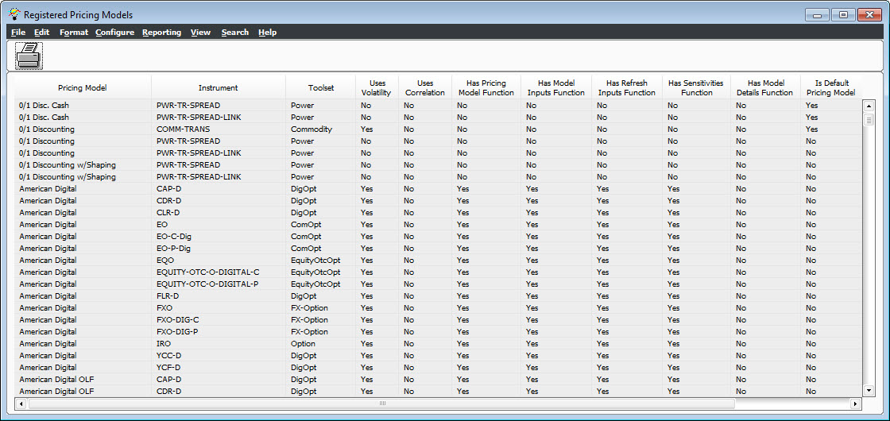

The Table Viewer is a uniform interface with standard user-configurable features for table viewing. Different modules within the system use the Table Viewer to display data. Its layout is in the form of a table, with a number of labeled columns, each representing a data field, and a number of rows, each representing a data record. The manner in which information is displayed may be changed through the Configure View menu functionality.
The Table Viewer grid does not have a defined limit but it is limited by the amount of memory on a user's machine.
This window is utilized by various functionalities in the system. For illustration purposes, the following is an example of how it can be accessed:
The following window displays:

This menu items available in each Table Viewer window may vary depending upon from which window they are accessed. The window provided in this example contains the menu items listed below. Please note this may not be a comprehensive list of Table Viewer menu options.
Menu |
Item |
Description |
| File | Save Configuration | Select this menu to save modifications made to the configuration currently loaded on the screen. If a user-defined configuration is not loaded, the configuration is saved to the system default configuration. |
| Load Configuration | Select this menu to view a pick list of saved
configurations. The pick list contains both user-defined configurations
and a default configuration, if designated. Select the configuration
to be loaded.
User-defined configurations are created in the Configure View window. Note: This functionality differs from the Load menu item in the Configure View window, which only allows named configurations to be loaded, not the default. |
|
| Select this option to save the window as an output report. The options to print a physical copy or view the file are provided. | ||
| Copy Window | Select this menu to open another instance of the Table Viewer window containing the same information as the original window. | |
| Export to Text File | Select this option to export the content of the table to a file in comma-separated format. | |
| Export to XML File | Select this option to export the contents of the table to a file in XML format. | |
| Exit | Select this menu to close the window. | |
| Edit | Copy | Select this option to copy the highlighted rows to the Windows clipboard. These rows can then be pasted into other Windows applications. |
| Select All | This option can be used to select all rows in the Table Viewer window. | |
| Format | Toggle Formatting <F4> | Select this option to change the format of
the data from its alias to the actual value stored in the
database, and vice versa.
For example, the Uses Volatility field displays Yes or No. When the field formatting is toggled to display the alias, the column will display the actual values stored in the database, 1 for Yes and 0 for No. Select this option again to revert the data to its alias. |
| Auto-Size <F2> | Select this option to adjust the width of each column to fit the data. | |
| Toggle Row Header <F5> | Select this menu to display or hid the row header. | |
| Default Formatting <F9> | Select this option to apply the system default formatting. | |
| Configure | Configure | Select this option to open the Grid Configuration window. This window may be used to customize how the data table is displayed. |
| Reporting | Script à Run Script | When this option is selected, the Run AVS Script window displays. This window is used to select the script to run and the columns (i.e., fields) that will be passed as arguments to the selected script. |
Script Run à Task |
When this option is selected, the Run AVS Script window displays. This window is used to select the task to run and the columns that will be passed as arguments to the script that will be run by the task. | |
| Crystal à Crystal Ad Hoc | Select this option to send the contents of the table to the selected Crystal Report template. A file browser displays, allowing for the selection of the template of the Crystal Report that will be generated. | |
| Crystal à Export to Ttx | Select this option to export a file containing the format of the table for the use of Crystal Reports. | |
| Publish | Select this menu to collect the table data and send it across Tibco Rendezvous. This functionality is provided for connectivity to 3rd party systems that can also communicate with Tibco Rendezvous. Customers can create a report “listener” that can subscribe to the Tibco Message and receive the data once “published.” | |
| Pivot Table | Select this option to access the Pivot Table Setup window. This window can be used to create a pivot table using the fields in the Table Viewer window. | |
| MS Excel | When this option is selected, the Excel Interface window displays. This window is used to export data in the Table Viewer window to a new, open, or existing Excel workbook. Note: This functionality requires a local machine installation of Excel. This functionality looks at values in the user’s local registry. If Excel is not installed locally, or it is installed across a network, this will not work. |
|
| View | All Rows | When this option is selected, all rows (e.g., data and sum rows) display in the table. This option is selected by default. |
| Sum Rows | Select this option to only display sum rows in the table. Sum rows only display if a sum break is defined in the Configure View. | |
| Data Rows | Select this menu to only display the data rows in the table. | |
| Show Table Info | Select this option to display a window containing information about the table such as name, date and time of last update, number of columns, and number of rows. | |
| Search | Find <F3> | Select this option to display the Search window. This window is used to perform a search of the table data. It also enables the specification of the columns to be searched. |
| Help | Help | Select this to access the system help files. |
The buttons available in each Table Viewer window may vary depending upon from which window they are accessed. Typically, the window contains at least a Print button.
Button |
Description |
| This button has the same functionality as File à Print. | |
This symbol indicates that a table with data relevant to the field is available. When displayed in a column, double click to open the table. |
The fields contained in this window depend on the functionality from which this window was accessed.
This window utilizes the following function keys:
| Key | Description |
| F2 | This has the same functionality as Format à Auto-Size |
| F3 | This has the same functionality as Search à Find. |
| F4 | This has the same functionality as Format à Toggle Formatting. |
| F5 | This has the same functionality as Format à Toggle Row Header. |
| F9 | This has the same functionality as Format à Default Formatting. |
Right-clicking any column header of the table displays the Column Header Menu.